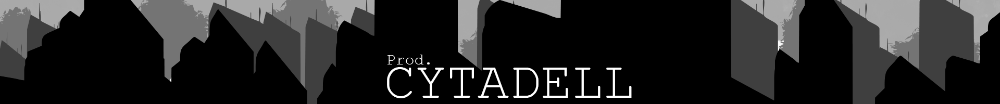

sobre
HOME |
CONTATO
Prod. Citadel:
A Citadel é uma comunidade inovadora e produtora audiovisual dedicada a reunir talentos independentes em um espaço colaborativo e de crescimento conjunto. Nossa missão é descobrir e promover artistas, editores, thumbmakers, logomakers e outros profissionais que buscam visibilidade e reconhecimento no mercado.
Nossa Missão:
Na Citadel, acreditamos no poder da colaboração. Nosso objetivo é fazer com que talentos antes desconhecidos se tornem referências em suas áreas, crescendo juntos como uma comunidade unida e forte.
- Fundadores: A Prod Citadel foi idealizada por um grupo de amigos apaixonados por audiovisual, que acreditam na força do trabalho colaborativo.
- Recrutamento: Inicialmente, o recrutamento é feito por convite, focando em trabalhadores talentosos que ainda não tiveram a chance de brilhar.
- Rede e Portfólio: Estamos desenvolvendo uma rede robusta e um portfólio onde todos os projetos realizados são creditados à Citadel, destacando o esforço coletivo.
Nossa Visão:
A Citadel aspira a se tornar um monopólio no mercado de produções audiovisuais, onde talentos diversos se reúnem para criar projetos inovadores e de alta qualidade. À medida que crescemos, revisamos nossas parcerias e estratégias para continuar inovando e liderando o mercado.
Junte-se a Nós:
Se você é um talento independente buscando uma oportunidade para mostrar seu trabalho e crescer em conjunto com outros profissionais, a Prod. Citadel é o lugar certo para você. Venha fazer parte dessa revolução no mundo audiovisual!